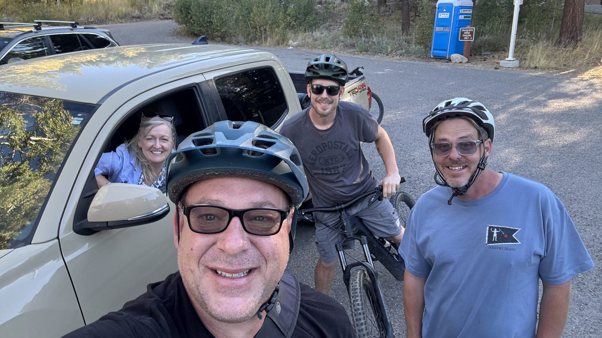
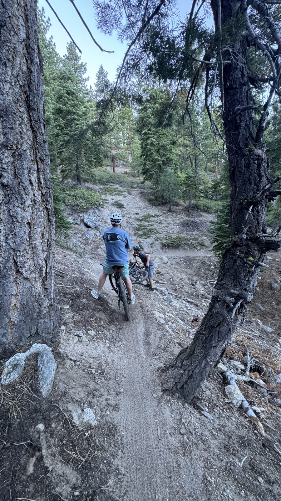

My brother and my nephew came out from Buffalo, New York, for their first visit, and I wanted them to ride Clear Creek. I've ridden it a few times: you start high at Spooner Summit and spend most of the evening going down, from the pines into the desert. Neither of them had been on a bike in years.
My wife drove the three of us up and dropped us at the trailhead at 5:36. The first mile is the only real climb, about 150 feet up to 7,280 feet, and then the trail turns downhill and mostly stays that way.

We stopped under the big pines at 6:11, half for a breather and half for the view. By 6:22 we were up on a pile of granite with the forest falling away behind us, grinning at the camera.
The part I worried about was the light. The top of Clear Creek is the alpine section, and it's the part you want to be out of before dark; below it the trail eases into desert riding. The lights came on for the last stretch down to the James Lee end of the trail and over to James Lee Park. We rolled in at 8:11.
By the numbers: 18.2 miles, about 2,300 feet lower than where we started, two and a half hours start to finish.

They came home with a few bumps, sore muscles and a great story, and they said it was the most fun they'd had in a long time. I've ridden this trail a few times, and I loved doing it with them for their first.
What I learned: start an evening ride earlier than you think, and bring lights anyway. And a trail you know is a different trail when you're showing it to someone.